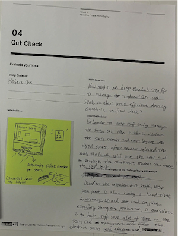

EVALUATION
Idea I: Innovation Solution

We release the new students' ID card. The seat number will be displayed on the card after check-in at the kiosk. Also, the student information will be displayed on the staff side.
This solution would help them reduce the time in explaining to the students about the seat location. Also, they do not need the seat card anymore.
Idea II: Effective Solution
In order to help staff easily manage the seats, this idea is to visualize the seat number and room layout on the digital screen.
After the students selected the seat, the kiosk will give the seat card to student and students will insert the card back into the kiosk when checking-out.
This solution will reduce the processing time for staff in exchange for the student’s ID with the seat card.